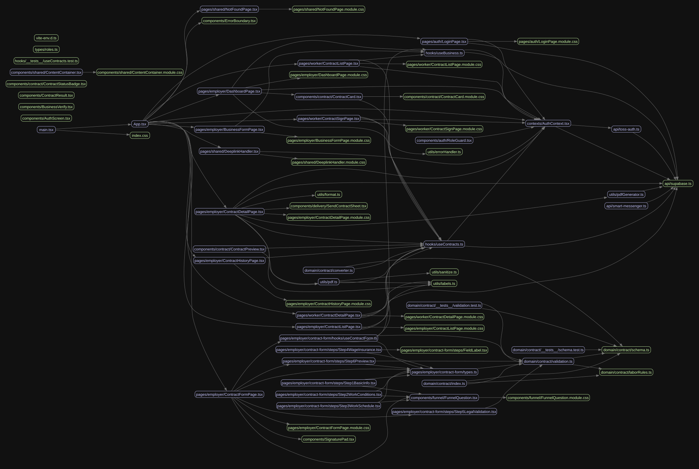

toss-contract-app은 Toss 플랫폼 기반 근로계약서 작성·관리 미니앱입니다. React + TypeScript 프론트엔드와 Express + TypeScript 백엔드로 구성되어 있으며, Supabase를 데이터베이스로 활용합니다. 본 보고서는 tre, tokei, madge, lizard 도구를 활용하여 코드베이스의 구조, 규모, 의존성, 복잡도를 정량·정성 분석한 결과입니다.
프로젝트는 크게 세 계층으로 구성됩니다. 프론트엔드(src/)는 React + TypeScript 기반으로 계약서 작성 폼, 미리보기, PDF 출력을 담당합니다. 백엔드(server/src/)는 Express + TypeScript로 인증, 계좌, 거래내역, 이체 API를 제공합니다. 데이터 계층(supabase/)은 Edge Functions와 마이그레이션으로 구성됩니다.
| 계층 | 주요 기술 | 파일 수 | 핵심 역할 |
|---|---|---|---|
| 프론트엔드 | React, TypeScript, Vite | 34개 (TSX) | 계약서 작성·미리보기·PDF |
| 백엔드 | Express, TypeScript, Supabase | 53개 (TS) | 인증·계좌·거래·이체 API |
| 데이터 | Supabase Edge Functions, SQL | 7개 (SQL) | 마이그레이션·Edge Functions |
| 문서 | Markdown, 감사 보고서 | 13개 (MD) | 보안 감사·인증 문서 |
tokei 분석 결과, 전체 180개 파일에서 44,597라인의 순수 코드가 작성되었습니다. TypeScript(TS + TSX)가 전체 비-JSON 코드의 80.5%를 차지합니다.
| 언어 | 파일 | 코드 라인 | 주석 | 공백 |
|---|---|---|---|---|
| TypeScript | 53 | 4,755 | 572 | 673 |
| TSX | 34 | 3,265 | 31 | 278 |
| JSON | 8 | 30,439 | 0 | 0 |
| SVG | 33 | 944 | 183 | 0 |
| SQL | 7 | 436 | 99 | 52 |
| CSS | 16 | 377 | 6 | 53 |
| 기타 (JS, YAML, Python 등) | 5 | 261 | 23 | 36 |
| 합계 (코드) | 156 | 44,597 | 914 | 1,092 |
JSON 30,439라인은 대부분 package-lock.json 등 자동 생성물입니다. 주석률은 TypeScript 10.7%, SQL 18.5%로 양호한 수준입니다.

총 21개 파일이 다른 모듈에서 import되지 않았습니다. 진입점(main.tsx), 환경 파일(vite-env.d.ts), 테스트 파일을 제외하면 약 14개가 검토 대상입니다.
| 카테고리 | 파일 |
|---|---|
| 진입점 | main.tsx, vite-env.d.ts |
| 타입 정의 | types/roles.ts |
| API | api/smart-messenger.ts |
| 도메인 | domain/contract/converter.ts, domain/contract/index.ts |
| 컴포넌트 | AuthScreen.tsx, BusinessVerify.tsx, ContractResult.tsx |
| 컴포넌트 (계속) | auth/RoleGuard.tsx, contract/ContractPreview.tsx, contract/ContractStatusBadge.tsx, shared/ContentContainer.tsx |
| Contract Form Steps | Step1BasicInfo.tsx, Step2WorkConditions.tsx, Step3WorkSchedule.tsx, Step4WageInsurance.tsx |
| 테스트 | hooks/__tests__/useContracts.test.ts, domain/contract/__tests__/schema.test.ts, domain/contract/__tests__/validation.test.ts |
참고: Contract Form Step 컴포넌트들은 동적 import로 사용될 가능성이 높습니다. converter.ts와 RoleGuard.tsx는 미사용 코드일 수 있어 확인을 권장합니다.
lizard 분석 결과, 총 15건의 경고가 발생했습니다 (CCN ≥ 10 또는 길이 ≥ 50 라인).
| 함수 | 파일 | CCN | 길이 |
|---|---|---|---|
createContract |
src/hooks/useContracts.ts:347 | 49 | 60 |
validateStep |
src/.../useContractForm.ts:138 | 44 | 85 |
(auth route) |
server/src/routes/auth.ts:287 | 30 | 119 |
validateLaborContract |
src/domain/contract/validation.ts:83 | 25 | 174 |
| 함수 | 파일 | 길이 | CCN |
|---|---|---|---|
useContractForm |
src/.../useContractForm.ts:37 | 258 | 1 |
(validation test) |
src/domain/.../validation.test.ts:49 | 231 | 1 |
validateLaborContract |
src/domain/contract/validation.ts:83 | 174 | 25 |
(auth route) |
server/src/routes/auth.ts:287 | 119 | 30 |
baseCSS |
src/utils/pdf.ts:26 | 107 | 1 |
분석 결과를 바탕으로 우선순위가 높은 리팩터링 대상을 선정했습니다.
| 지표 | 상태 | 비고 |
|---|---|---|
| 순환 의존성 | ✅ 양호 | 0건 — 단방향 의존성 원칙 준수 |
| 코드 규모 | 중소형 | TS+TSX 8,020라인 — 관리 가능 범위 |
| 고아 파일 | ⚠️ 주의 | 21개 (진입점·테스트 제외 약 14개 검토 필요) |
| 복잡도 | 🔴 개선 필요 | CCN 25 이상 4건, 100라인 초과 5건 |
순환 의존성이 전무하고 계층 분리가 잘 되어 있다는 점은 매우 긍정적입니다. 다만 createContract와 validateStep 함수의 순환 복잡도가 임계치를 크게 초과하고 있어, 버그 발생 위험과 유지보수 비용이 높은 상태입니다. 5개 우선순위 항목의 리팩터링을 순차적으로 적용하면 코드 품질이 크게 개선될 것으로 판단됩니다. 상세 대시보드는 dashboard.html을 참조하십시오.